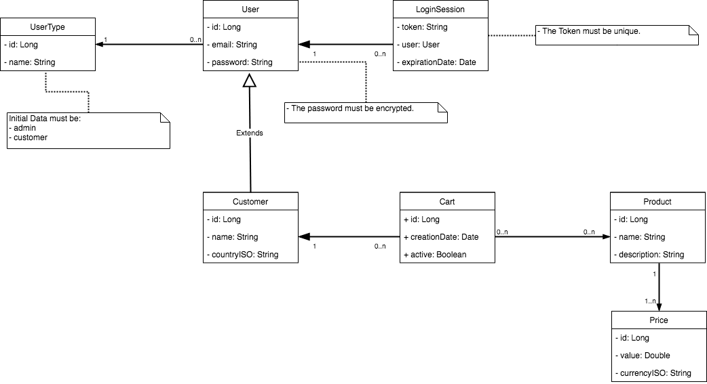

The goal of the internship was to use my created code as a sample for a class in Spring Framework and microservices which was going to be held by my mentor Chritstian Franco to the SAP CX Commerce.
In order to be ready for this internship I had to learn Java and some Java 8 specific methods as well as understand RESTFul web services.
Before my main and final assignment I did several others. I wrote a paper on the groovy language and highlighting its differences against Java, I had to read some papers on SCRUM and answers a questionnaire with SCRUM related questions and I also did some small Java programs before the big one.
I’ll start with the description, then the requirements and my thoughts.
Develop a Microservice based based on Spring Boot in order to serve RESTFul web services for E-Commerce platforms.
• Use the "Software Craftsmanship” and “Good Practices” concepts.
• Create integration and unit tests.
• The endpoints must be RESTFul and use JSON payloads.
• Must respect the enterprise pattern (Controller -> Facade -> Service -> Repository).
• Must use the new Java8 resources such as Stream API, Optionals and Lambdas.
The project was pretty much a full e-commerce backend developed from scratch using Spring Boot and as little high level security/login methods as possible. I had to create the models and their relations (showed in the class diagram up next) and all the methods associated with their usage.
The whole team had a pretty chilled and good working environment. Everyone gets along really well and they can ask each other questions or share some cool stuff they did and it’s a really good place to work at. I always had lunch in the office with a bunch of team mates and they were all super nice and most of them were really smart and good at their job which created some really interesting chats where they all had a lot of opinions and insights which they shared with me. I learned a lot, both programming and in a more personal way at SAP and I would recommend it to everyone who would like to do a 1 month internship on web development to give it a look.
My mentor gave me a score of 20 in a 0-20 scale. He wrote an internhip evaluation which you can check here. The whole internhip went really well and at the end I was invited to work there after I finished college.